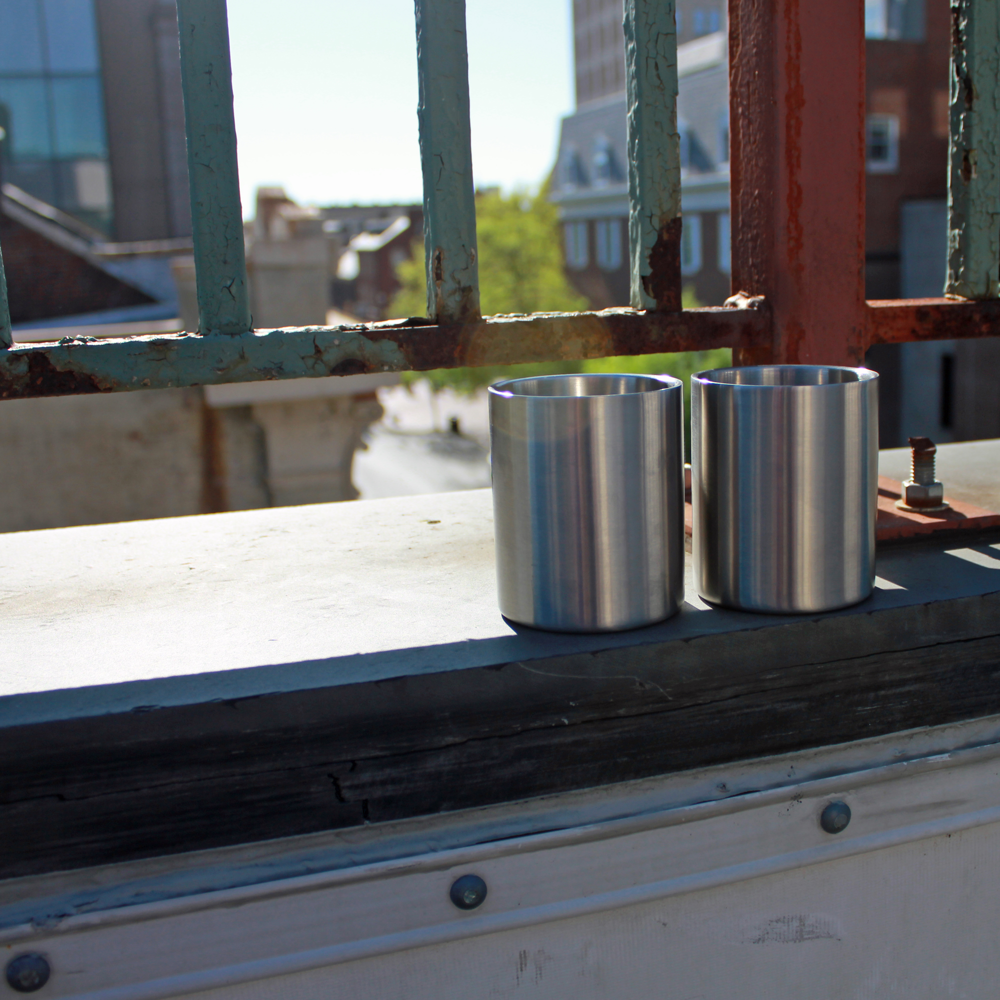
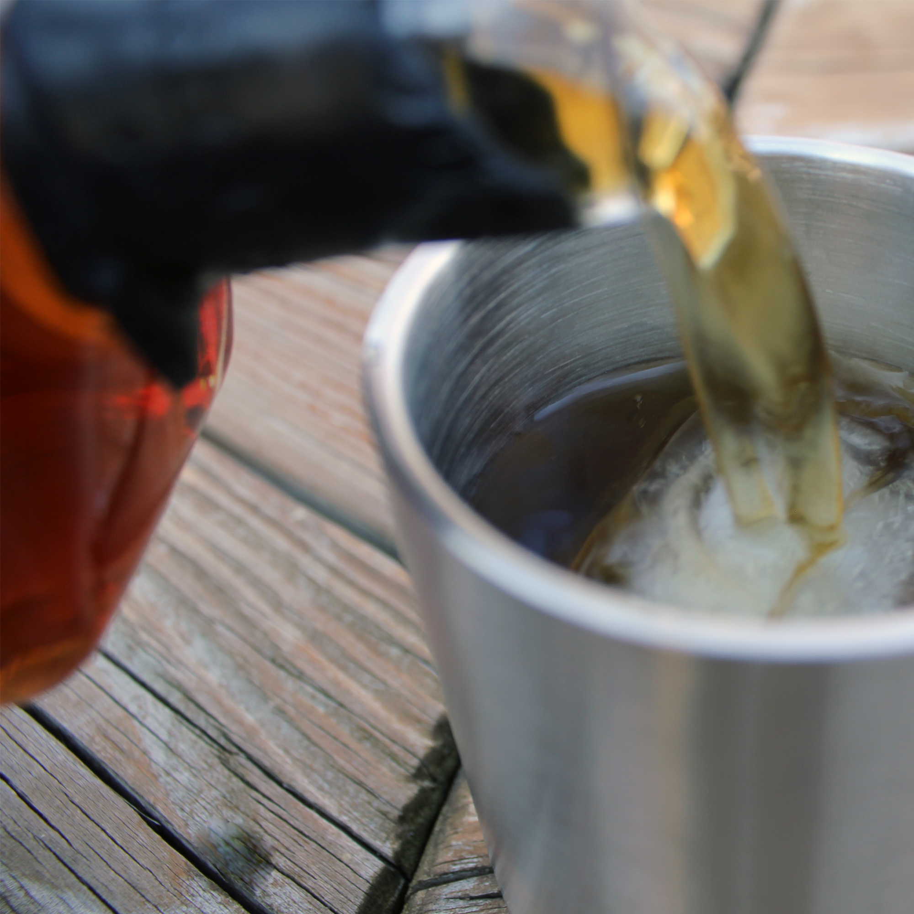

We took the classic Lowball tumbler and added modern craftsmanship to create the Lancaster Steel Lowball. A stainless steel doublewall vacuum insulated lowball tumbler, designed to keep your favorite cocktail chilled for up to twice as long as a standard glass tumbler. The Lowball is perfect for any environment from your favorite cigar lounge to relaxing by the water.
| Name | Description | Price |
|---|---|---|
| Single Pack | One Lowball tumbler. | 19.99 |
| Two Pack | Two Lowball tumblers. | 25.99 |
| Four Pack | Four Lowball tumblers. | 35.99 |